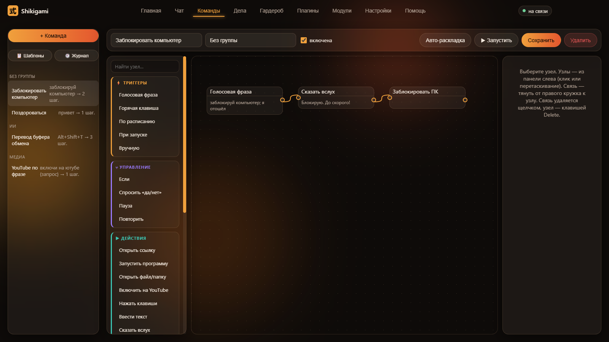
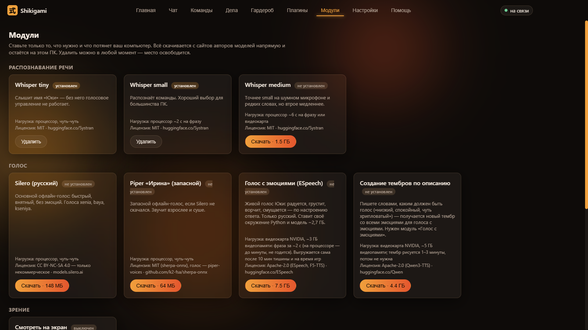
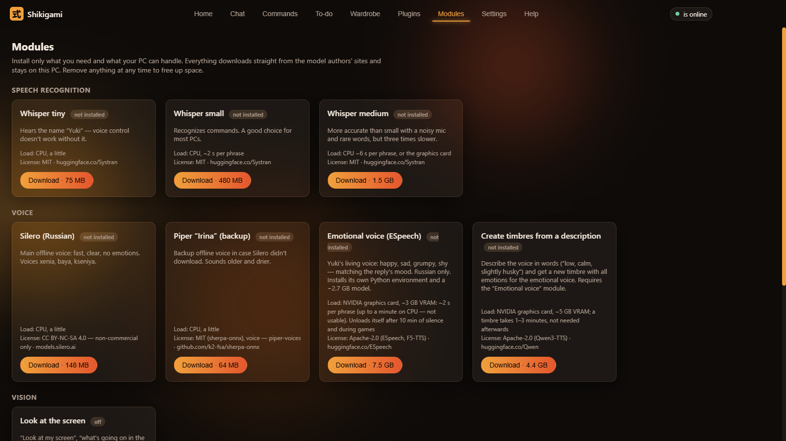

Фильтруйте по темам или листайте всё подряд. Почти всё работает и голосом, и в чате.
Filter by topic or scroll through everything. Almost all of it works by voice and in chat.



Нажмите, чтобы увеличить.
Click to enlarge.